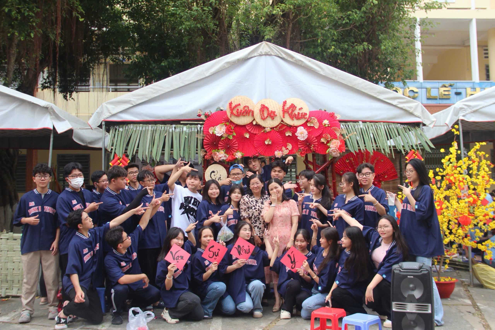
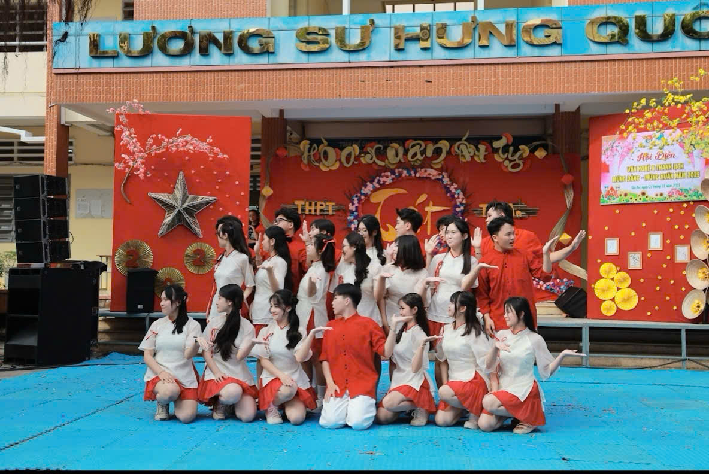
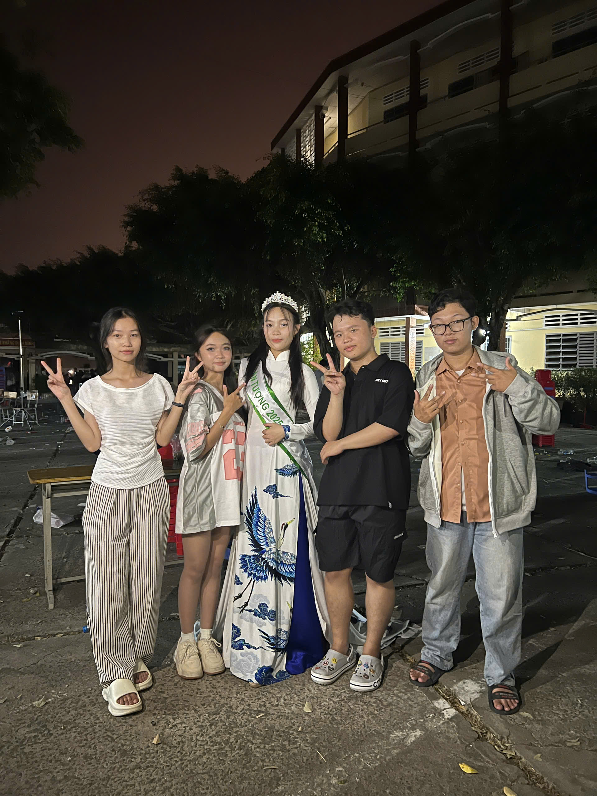

Hoạt động năng nổ và hiệu quả
Cháy hết mình trong các cuộc chơi
Giành những giải thưởng cao nhất
|
|
Với không khí Tết trường THPT Tân An luôn tổ chức trại Xuân mỗi năm để chung vui ngày Tết. Hoạt động làm trang trí trại cũng là cách giúp các thành viên trong lớp ngắn kết lại với nhau. Tham gia làm trại cũng giúp các bạn học sinh sáng tạo và phát triển nhiều kĩ năng, cùng với làm trại các bạn sẽ bán một số món hàng để kím lại khoản tiền bỏ ra để làm trại. Từ đó khiên khuôn viên trường trở nên vui vẻ và vô cùng nhộn nhịp.

Cùng với các gian hàng và các trại đẹp sẽ là cuộc thi nhảy sạp. Để giúp các bạn trẻ bảo tồn truyền thống nét đẹp văn hóa thì nhảy sạp là một trò chơi vô cùng bổ ích. Nhảy trên nền nhạc dân giang cùng tiếng tre lạch cạch khiến cho mọi người nhớ về tuổi thơ cùng với đó hiểu rõ hơn về truyền thống, văn hóa nước ta.
Văn nghệ cũng là một phần không thể thiếu của ngày trại xuân. Khi các lớp chuẩn bị các tiết mục soi động thú vị để trình diễn phụ vụ các bạn trẻ và tranh nhau các giải thưởng. Đặc ngày xuân nên các lớp chọn những bài nhạc tươi trẻ cùng với sự chuận bị chu đáo đã góp phần tạo nên sức hút của trường THPT Tân An.

Đây là cuộc thi sắc đẹp của trường THPT Tân An, đến với phần thi này các bạn sẽ được thưởng thức nam thanh nữ tú castwalk một cách tự tin trên sàn vô cùng thu hút và thú vị.
Ở phần thi này sẽ được chia ra là thanh lịch truyền thống và thanh lịch tự do.
-Thanh lịch truyền thống: các bạn thí sinh sẽ mặc các trang phục áo đẹp mắc và tinh xảo đi trên sàn diễn, đi theo cặp một nam và một nữ.
-Thanh lịch tự do: các bạn sẽ mặc trang phục tùy chọn như các bộ đầm dạ hội, vest, trang phục dân tốc, những bộ đầm lụa,...Đương nhiên cũng sẽ đi theo cặp một nam và một nữ.
Sau khi xem các bạn thí sinh trình diễn phần thưởng sẽ được giải ngay gồm cặp đội duyên dáng, cặp đôi thanh lịch, hoa khôi và nam vương.

Là phần đốt lửa trại và quẩy nhạc DJ đây được xem là phần kết thúc các sự kiện của trường cũng là phần được các bạn mong chờ nhất. Khi tất cả mọi người cùng múa hát xung quanh ngọn lựa tạo nên những hình ảnh đẹp đẽ, kỉ niệm nhất trong đời học sinh.